A investigação financeira moderna exige uma abordagem ampliada e inte grada, que vá além da análise bancária tradicional. A complexidade das operações criminosas, especialmente aquelas ligadas à lavagem de dinheiro, corrupção e ocultação patrimonial, demanda o exame deoutros dados financeirosque, embora não estejam diretamente vinculados ao sistema bancário, revelam o comporta mento econômico do investigado e suas estratégias de blindagem patrimonial.
Esses dados incluem informações provenientes deinstituições de pagamento, fintechs, corretoras de valores, cooperativas de crédito, seguradoras, operadoras de cartão de crédito, empresas de empréstimo pessoal, consórcios, plataformas de leilão eletrônico e programas de fidelidade. Cada uma dessas fontes representa um vetor de movimentação financeira que pode ser explorado mediante representação judicial específica e fundamentada.
A análise de contas emfintechs e instituições de pagamentopermite identificar transações via PIX, transferências entre contas digitais, uso de cartões pré-pagos e movimentações que escapam ao radar bancário convencional. Já os dados decorretoras de valoresrevelam investimentos em ações, fundos, títulos e até ativos virtuais, sendo essenciais para mapear patrimônio oculto ou dissimulado.
Asseguradorasfornecem informações sobre apólices de seguro de vida, veícu los, imóveis e obras de arte, que podem indicar bens de alto valor não declarados. Asempresas de crédito direto ao consumidor (CDC)econsórciostambém são relevantes, ao evidenciarem aquisições patrimoniais e estratégias de financiamento que podem ser utilizadas para lavar recursos ilícitos.
Além disso, a participação emleilões judiciais ou administrativospode indicar a aquisição de bens por valores abaixo do mercado, com posterior revenda ou ocultação. Osprogramas de fidelidade e pontuação, por sua vez, embora não sejam fontes diretas de recursos, revelam o padrão de consumo e deslocamento do investigado, sendo úteis na contextualização do seu perfil econômico.
Em suma, a análise de outros dados financeiros amplia o escopo da inves tigação, permitindo uma visão mais completa e estratégica do fluxo patrimonial do investigado. Trata-se de uma abordagem essencial para a produção de prova robusta, contextualizada e juridicamente válida, especialmente em casos de criminalidade econômica sofisticada.
O presente módulo tem como objetivo apresentar aspectos gerais e legais sobre instrumentos financeiros tecnológicos inovadores que estão sendo incorporados ao Sistema Financeiro Nacional e à rotina da sociedade brasileira. Fala, em linhas gerais, do que se convencionou chamar do ramo de fintechs e dos instrumentos financeiros oferecidos por meio de tecnologia da informação.
A necessidade de abordagem desse tema decorre não só do uso de tecnologias financeiras para fins de práticas criminosas, mas também do fato de que esse mercado está inserido na vida das pessoas de maneira crescente e incontornável, de tal modo a ser inerente ao entendimento das rotinas financeiras mais triviais nos dias de hoje.
Com o avanço da tecnologia e o crescimento do uso da internet na vida dos brasileiros, novas necessidades financeiras surgiram, exigindo a modernização do sistema financeiro. As dinâmicas de trabalho, lazer, consumo e ensino passaram a ocorrer de forma remota, criando oportunidades para soluções financeiras inovadoras.
Diante disso, o Brasil e o mundo vêm passando por uma substituição crescente de instrumentos financeiros, impulsionada por três fatores principais: demanda, necessidade e agilidade. Qualquer um de nós, quase que diariamente, utiliza-se de algum desses serviços tecnológicos de pagamento, que funcionam de maneira muito rápida e eficiente.
Ocorre que por trás dessa dinâmica existe todo um cenário desenvolvido para que rotinas financeiras funcionem de maneira eficiente – o que acaba passando desapercebido por boa parte dos brasileiros. A agilidade desses processos decorre, em grande parte, de um panorama de desburocratização de rotinas e automatização de processos. Tudo dentro de uma lógica de mercado na qual os atores desse sistema trabalham para finalidades lícitas.
O Sistema Financeiro Nacional opera sob uma lógica que combina a livre concorrência com a autorregulação dos seus atores. Parte-se da premissa de que a regulamentação geral deve ser complementada por uma atuação eficiente dos próprios agentes financeiros, garantindo segurança e estabilidade aos serviços prestados. Fala-se, especialmente, dos sistemas de conformidade (compliance) e combate à lavagem de dinheiro que os atores desse sistema são obrigados a aderir.
O Sistema de Pagamentos Brasileiro, que será tratado adiante, também parte das mesmas premissas. Contudo, essas dinâmicas financeiras azeitadas pela tecnologia, ao mesmo tempo que desburocratizam processos e democratizam o acesso aos meios eletrônicos financeiros, fragilizam a fiscalização estatal e abrem espaço para fraudes. A complexidade do ecossistema financeiro e suas nuances são exploradas por agentes mal-intencionados, criando um ambiente propício à prática de delitos.
As fraudes modernas se baseiam na terceirização da responsabilidade, onde cada elo da cadeia econômica veicula limitações de sua alçada operacional, atribuindo responsabilidades a outros atores dessa cadeia. Na prática, isso torna difícil estabelecer até que ponto um ator de mercado agiu com má-fé ou apenas não tinha condições concretas de verificar as suspeitas de envolvimento delituoso de um parceiro de negócios.
Ademais, o cenário de elevada disputa concorrencial desincentiva a imple mentação de sistemas de conformidade muito rígidos, visto que eles tendem a travar alguns negócios e prejudicar a lucratividade dessas empresas.
Nesse cenário, criminosos se aproveitam dessas brechas e lacunas amparadas na desburocratização, justamente porque esse seccionamento de responsabilidades perpassa a sensação de blindagem legal em cada etapa do processo econômico de uma cadeia. Esse cenário se agrava quando os próprios agentes de mercado apresentam essas alternativas como soluções viáveis, induzindo clientes a acreditar na legalidade de operações que, na verdade, facilitam a inserção de recursos ilícitos no sistema financeiro.
Modernamente, especialmente no período pós-pandemia, o que se vem observando é uma crescente onda de utilização de fintechs para fins de lavagem de dinheiro, em substituição a velhos mecanismos de operacionalização de dinheiro ilícito.
E, neste ponto, é preciso deixar muito claro que o cenário é extremamente preocupante! Sem melindres em assumir o panorama grave que estamos vivendo, é preciso registrar que os organismos estatais brasileiros vêm encontrando consi deráveis obstáculos para acompanhar minimamente, em termos de repressão e persecução criminal, a evolução dessa nova senda de delitos financeiros.
A confirmar esse panorama, as recentes repercussões acerca das Operações Quasar, Tank e Carbono Oculto (deflagradas conjuntamente em 28/08/2025) demonstram a capilaridade dos processos de lavagem e de movimentação de dinheiro espúrio por intermédio de fintechs e empresas do ramo de pagamentos.
As operações lançaram foco maior sobre problemas envolvendo o esse ramo financeiro que já estavam sendo antecipados por algumas investigações da PF. Recentemente, diversas operações policiais já vinham abordando a atuação de grupos criminosos no ramo de fintechs2223:
https://www.otempo.com.br/brasil/2025/6/26/entenda-como-pcc-cv-e-outras-faccoes -usam-fintechs-e-bets-para-lavar-bilhoes-do-crime
https://g1.globo.com/economia/noticia/2025/02/25/2go-bank-e-invbank-as-fintechs -acusadas-pela-pf-de-lavar-dinheiro-para-o-pcc.ghtml
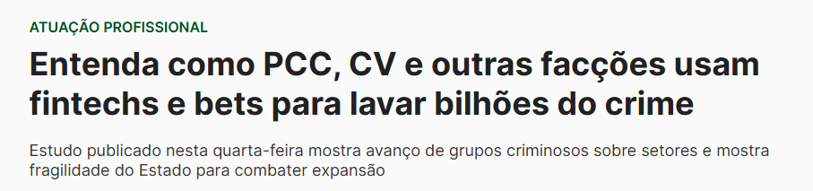
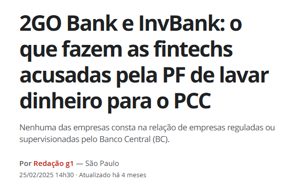
Diante disso, além de conceituar os principais serviços que se inserem nesse grande tema “fintechs”, vamos, ao final, demonstrar as principais tipologias de envolvimento dessas ferramentas em esquemas de lavagem de dinheiro.
Um primeiro ponto a ser abordado é justamente a inexistência, ainda, de um conceito normativo ou regulamentar do que vem a ser fintech – que é um termo proeminentemente de mercado. Segundo o Banco Central:
Fintechs são empresas que introduzem inovações nos mercados financeiros por meio do uso intenso de tecnologia, com potencial para criar novos modelos de negócios. Atuam por meio de plataformas online e oferecem serviços digitais inovadores relacionados ao setor.
No Brasil, há várias categorias de fintechs: de crédito, de pagamento, gestão financeira, empréstimo, investimento, financiamento, seguro, negociação de dívidas, câmbio, e multisserviços.
Portanto, a primeira premissa que devemos estabelecer é que ao tratar de fintech, devemos, primeiro, questionar: de qual serviço ou ramo estamos falando? Isso porque a legislação aplicável e a necessidade de autorização para funcio namento para a prestação de determinado serviço dependem de qual atividade prestada por meio de fintech estamos analisando.
Comumente, as pessoas tendem a atrelar o termo fintech às chamadas instituições de pagamento – o que, todavia, pode nos levar a alguns equívocos. Muito embora uma instituição de pagamento possa se enquadrar no conceito de fintech, porque é um serviço financeiro prestado por intermédio de tecnologia, há diversos outros serviços e atividades financeiras que podem ser prestados por empresas não enquadradas no conceito legal de instituição de pagamento.
Da mesma forma, não podemos confundir bancos digitais com instituições de pagamento. Bancos digitais são instituições financeiras e integram o SFN; instituições de pagamento integram o SPB – tal diferenciação será esmiuçada mais à frente.
De fato, pelas caraterísticas do mercado, é muito fácil confundir os diferentes atores do mercado, dado que boa parte dos serviços prestados se assemelha ou coincidem. Aliás, tal confusão decorre justamente das nomenclaturas “bank” normalmente utilizadas por fintechs. Inclusive, recentemente, o BACEN regulou o uso do termo, para evitar a confusão por parte dos consumidores24:
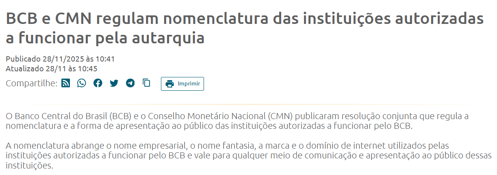
Assim, de antemão, vamos tentar estabelecer premissas básicas, que visam evitar confusões mais triviais:
Assim, considerando o conceito mais ampliado do termo fintech, para fins de focalização da matéria de IPO, vamos restringir a abordagem neste caderno às principais atividades que se utilizam de serviços tecnológicos financeiros, sob o ponto de vista fenômenos criminais: Instituições de Pagamento, Bank as a Service (BaaS) e serviços de eFX (Electronic Foreign Exchange).
Ao final, vamos demonstrar as principais tipologias de envolvimento dessas ferramentas em esquemas de lavagem de dinheiro.
https://www.bcb.gov.br/detalhenoticia/20951/nota
As Instituições de Pagamento (IPs) foram regulamentadas pela Lei nº 12.865/13, que trata dos arranjos e das instituições de pagamento integrantes do Sistema de Pagamentos Brasileiro (SPB). São instituições que prestam serviços semelhantes aos dos bancos, mas não podem conceder crédito ou realizar captação de depósitos à vista.
A lei em referência aperfeiçoou o Sistema de Pagamentos Brasileiro, que dispõe de uma engrenagem de pagamentos que ocorre independentemente do Sistema Financeiro Nacional, mas que com ele se comunica.
O Sistema Financeiro Nacional é o conjunto de instituições, regras e órgãos que organizam, fiscalizam e executam as atividades financeiras no Brasil. Ele controla o funcionamento do mercado de crédito, do mercado de capitais, das instituições bancárias e das políticas monetárias. Seu objetivo maior é garantir a estabilidade econômica, a solidez das instituições financeiras e o adequado funcionamento do crédito e do investimento no país.
O SFN engloba diferentes órgãos normativos e supervisores, como o Conselho Monetário Nacional, o Banco Central do Brasil, a Comissão de Valores Mobiliários e o Conselho Nacional de Seguros Privados, além de uma série de instituições financeiras públicas e privadas. Em suma, o SFN é a arquitetura que sustenta o sistema bancário, o crédito, os investimentos e a política monetária do país.
O Sistema de Pagamentos Brasileiro, por sua vez, é uma parte específica — e vital — dentro do ambiente regulado pelo SFN. O SPB é o conjunto de procedi mentos, operações, regras e sistemas tecnológicos que permitem a transferência de recursos entre pessoas, empresas e instituições financeiras. Ele inclui desde TED, DOC e cartões até mecanismos modernos como PIX, SPB de liquidação em tempo real (STR) e câmaras de compensação.
O objetivo do SPB é assegurar que pagamentos e transferências ocorram de forma rápida, segura e eficiente, reduzindo riscos e garantindo liquidação adequada entre os participantes. O Banco Central é o principal responsável por normatizar e supervisionar o SPB, garantindo sua integridade e funcionamento contínuo.
A distinção central é que o SFN é o sistema amplo que regula toda a inter mediação financeira do país, enquanto o SPB é o “subconjunto operacional” dedicado especificamente a viabilizar pagamentos e movimentações de recursos.
O SPB atua dentro do arcabouço do SFN, mas concentra-se apenas na circulação do dinheiro — não na criação de crédito, regulação de instituições ou política monetária.
Assim, enquanto o SFN define as regras e organiza o sistema financeiro como um todo, o SPB garante o fluxo prático e seguro dos pagamentos que sustentam a economia no dia a dia.
Portanto, o SPB é uma estrutura complexa composta por regras, instituições e sistemas que viabilizam a rápida movimentação de recursos entre pessoas físicas e jurídicas no Brasil.
O SPB envolve os diversos participantes do sistema financeiro e também as chamadas infraestruturas do mercado financeiro - que são os sistemas tecnológicos especializados responsáveis pelo processamento, compensação e liquidação dessas transações (BACEN):
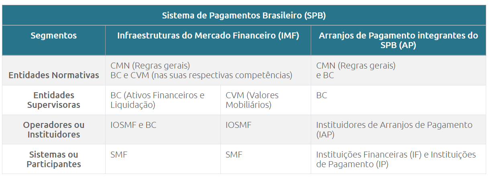
São essas infraestruturas que garantem a integridade das operações e a estabilidade do fluxo de pagamentos no país, desempenhando papel fundamental na eficiência e na solidez do SFN.
O sistema opera a partir do funcionamento dos diferentes arranjos de pagamento. Por arranjo de pagamento, entenda-se um conjunto de regras e procedimentos que regulam cada um dos serviços de pagamento (cartões de crédito, débito, Pix etc). O arranjo conecta pessoas físicas e jurídicas interessadas em realizar transações financeiras seguras e eficientes por um determinado método. Cada arranjo de pagamento e é supervisionado pelo Banco Central do Brasil e se insere no SPB.
Um bom exemplo de arranjo de pagamento são os cartões de benefícios, como vale-alimentação, vale-refeição e vale-transporte. Cada tipo de cartão tem suas próprias regras que determinam os locais de uso do cartão, modo de realização das transações, como o dinheiro é processado e transferido. Como é o BACEN que supervisiona esses arranjos, há um rigor fiscalizatório para que cada cartão benefício tenha regras claras para proteger tanto o usuário quanto o comerciante.
Dentro dessa grande estrutura do SPB, a lei previu a integração das chamadas instituições de pagamento. São empresas que participam de arranjos de paga mento inclusos dentro do SPB. Importante lembrar que serviços de pagamento são prestados não só por IPs, mas também por instituições financeiras, especialmente bancos, financeiras e cooperativas de crédito.
Todavia, dentro da grande engrenagem do SPB, a IP é a estrutura mais simples, sob o ponto de vista de sensibilidade do sistema financeiro, que busca dar maior capilaridade e acessibilidade aos arranjos de pagamento para a população bra sileira. Surgiram na ideia de simplificação do processo de acesso da população aos meios de pagamento, pautando-se justamente pela menor burocracia para abertura de contas.
As IP’s se inserem no SPB, mas não integram o SFN, apesar de serem fiscali zadas pelo BACEN (organograma do SFN, constante do site do BACEN):
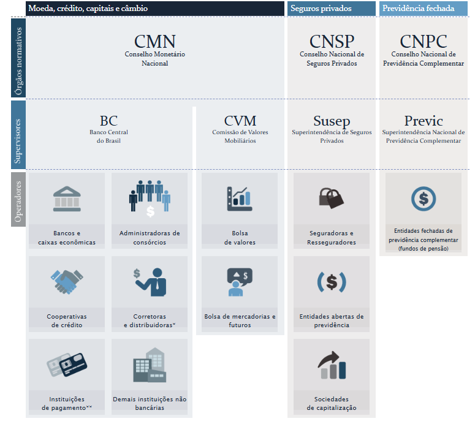
As IPs são classificadas em quatro categorias, conforme a Resolução BACEN nº 80/2021:
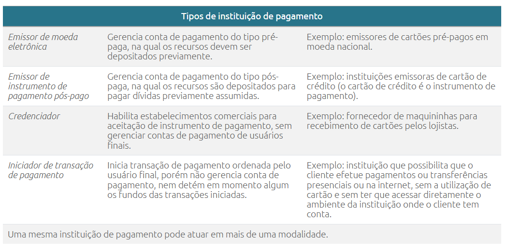
No caso, o problema sob o ponto de vista da investigação se concentra justa mente nos chamados moedeiros eletrônicos, que nada mais são que IP’s emitem moeda eletrônica representativa de recursos depositados em alguma instituição financeira. Ou seja, a partir de uma carteira virtual, disponibilizada por algum meio tecnológico, o cliente transaciona recursos eletrônicos (reais eletrônicos) representativos de recursos reais, que estão depositados em alguma instituição financeira. Por isso o nome moeda digital.
Para melhor entender, é como se houvesse um espelhamento do recurso real (dinheiro depositado) em um universo eletrônico (real eletrônico). A lógica é viabilizar que diversas transações possam ser realizadas nesse contexto eletrônico sem que, necessariamente, exista a movimentação dos recursos reais custodiados no SFN.
Assim, a partir de sistemas de compensações e condensação de transações realizadas no universo eletrônico, os movimentos financeiros realizados no universo do dinheiro real sejam realizados de maneira mais organizada e concentrada.
Para melhor ilustrar, retomo o exemplo dos cartões do tipo vale-alimentação. Cada real eletrônico disponível em um cartão alimentação é uma representação de um recurso depositado, no mundo real, em alguma instituição. Quando alguém vai ao supermercado e faz as compras com vale-alimentação, o que viabiliza a finalização da compra é justamente a existência de um valor eletrônico disponível a partir do cartão de vale-alimentação; todavia, o valor respectivo não é automaticamente transferido ao supermercado – a quitação em recurso real se dá em um segundo momento, a depender de cada arranjo de pagamento.
O moedeiro eletrônico disponibiliza a manipulação dos recursos ao cliente através das chamadas contas de pagamento, que é bem mais simples de ser aberta do que os tipos tradicionais de conta. A conta de pagamento é uma conta que pode ser utilizada pelo cliente para a realização de saques, pagamentos de contas e pagamentos de transações realizadas por cartões de débito ou crédito, ou para a realização de transferências.
A conta de pagamento se propõe a facilitar a vida de seus titulares. Tudo o que é relacionado a ela – abertura, operações, relacionamento entre cliente e instituição – pode ser feito digitalmente. Podem ser oferecidas pelas instituições de pagamento (IPs), pelos bancos, pelas cooperativas de crédito e por outras instituições financeiras.
A fim de deixar mais clara a diferenciação entre conta de pagamento e conta corrente, vejamos esse quadro elaborado pelo BACEN:
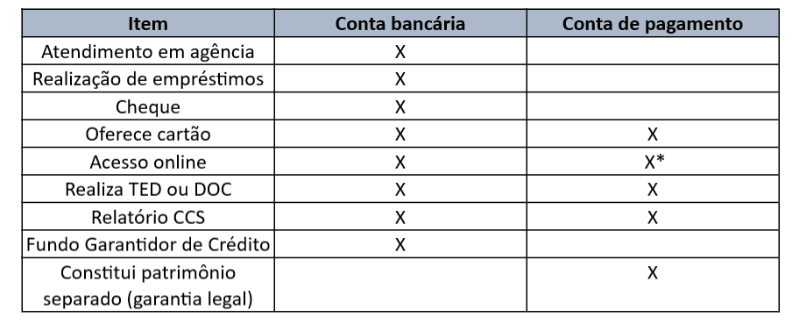
Pois bem, dentro de um cenário de interesse investigativo, dada a crescente utilização de contas de pagamento, observou-se a necessidade de que houvesse algum tipo de controle sobre os movimentos de valores realizados a partir delas.
As contas de pagamento, a partir das instituições que as oferecem, passarão a ser cadastradas no Cadastro de Clientes do Sistema Financeiro Nacional (CCS)25.
Portanto, em que pese a diferença entre conta de pagamento e conta corrente, teleologicamente uma quebra de sigilo bancário ou uma ordem de bloqueio judicial deveriam atingir também as contas de pagamento.
Todavia, algumas falhas na regulamentação do BACEN permitiram lacunas preocupantes na utilização de contas de pagamento para o cometimento de fraudes e ocultação de patrimônio.
RESOLUÇÃO BCB Nº 179/2022: consolida e revisa normas sobre o Cadastro de Clientes do Sistema Financeiro Nacional (CCS). (…) Art. 2º O CCS consiste em sistema informatizado, sob a gestão do Banco Central do Brasil, com o objetivo de: (…) II - propiciar o atendimento de solicitações, formuladas pelas autoridades legalmente compe tentes, do detalhamento de informações sobre: (…) § 1º Para fins de atendimento às solicitações de que trata o inciso II do caput, as contas e os ativos financeiros de que trata o art. 1º devem ser agrupados de acordo com a natureza do bem, direito ou valor, da seguinte forma: (…) VI - Grupo 6: contas de pagamento pré-pagas, excetuando-se as contas de pagamento detidas por usuário final exclusivamente para aporte de recursos relativos a programas de benefício social instituídos no âmbito municipal, estadual ou federal.
Na redação antiga, a Resolução BCB nº 80/2021 estabelecia que algumas instituições de pagamento poderiam, a depender da atividade desempenhada e da volumetria, operar sem autorização do BACEN. Na prática, isso as desincumbia de algumas obrigatoriedades estabelecidas pela autarquia – dentre as quais, a de inserir as informações das contas de pagamento no CCS e aderir ao SISBAJUD.
Muitas IPs operavam à margem da fiscalização, aproveitando-se de volumetrias mínimas que permitiam um “período de adaptação”, que se estendia entre 2021 e 2029.
Portanto, na regra antiga, até 2029 nós teríamos a possibilidade de uso de contas de pagamento não mapeadas, radicadas em IPs que não estavam autorizadas a funcionar pelo BACEN – e que, portanto, não se vinculariam ao CCS e ao SISBAJUD.
Com as recentes operações da Polícia Federal, notadamente focalizando o uso de fintechs por grandes organizações criminosas, houve uma grande pressão midiática e institucional no sentido da alteração dessa norma pelo BACEN.
Atualmente, a Resolução nº 80/2021 passou a estabelecer a obrigatoriedade para registro de todas as IPs junto ao BACEN, até MAI/26. A Resolução BCB nº 494/2025 estabeleceu os novos prazos para que IPs que já operam sem autori zação regularizem sua situação. Caso contrário, terão até 30 dias após o prazo final para cessar suas atividades.
Apesar dessas medidas, o problema ainda não está totalmente resolvido. A autorização do BACEN não implica, automaticamente, a inclusão da IP no Cadastro de Clientes do Sistema Financeiro Nacional (CCS) ou no SISBAJUD. Trata-se de processos distintos e que podem gerar uma situação anacrônica, na qual a IP está autorizada pelo BACEN, mas ainda não está inserida no CCS – especialmente se considerarmos a tendência de um ingresso massivo de IPs no sistema formal, a partir das alterações normativas.
De toda forma, diante do cenário que vivíamos, de completa impossibilidade em se obterem dados confiáveis de algumas contas de pagamento, não há dúvidas de que estamos experimentando uma melhoria considerável. A projeção de saneamento desses problemas diminuiu consideravelmente, muito embora o cumprimento dos regulamentos e normas por essas IPs exija constante atenção dos organismos estatais de controle.
O Banking as a Service (BaaS) é uma modalidade de negócio financeiro que permite que qualquer empresa, independentemente do setor, ofereça produtos e serviços tradicionalmente exclusivos das instituições bancárias. Por meio do BaaS, empresas podem ofertar serviços financeiros personalizados sem necessidade de investir em infraestrutura tecnológica própria ou de se inserir em uma estrutura de mercado financeiro.
Serviços de gateway26 de pagamento white label27 são um exemplo prático de BaaS. Eles permitem que empresas ofereçam serviços financeiros com sua própria marca, embora a operação seja feita por uma instituição financeira ou de pagamento autorizada. Isso inclui a criação de contas transacionais, que funcionam como canais concentradores de movimentação financeira entre clientes e fornecedores.
Plataformas como a Uber, 99, iFood utilizam esse modelo para oferecer carteiras digitais, viabilizadas por uma IP parceira que presta o serviço de BaaS. Assim, a Uber pode oferecer um ambiente que simula uma conta de pagamento, sem ser uma instituição financeira. O cliente da Uber, por sua vez, dispõe de uma espécie de conta no aplicativo, com layout muito próximo ao de uma conta digital, que permite determinadas transações.
As nuances criminosas desse mercado, entretanto, já são sensíveis. Na prática, observa-se a proliferação de plataformas que oferecem serviços financeiros diver sos (câmbio, criptoativos, pagamentos) por meio de interfaces simples, sem deixar claro o enquadramento legal dessas operações. Muitas vezes, os recursos dos clientes são concentrados em contas únicas, operadas em nome da plataforma, dificultando o rastreamento e a fiscalização.
Casos recentes revelaram o uso do BaaS por organizações criminosas para lavar dinheiro, como no caso das fintechs 2Go Bank e InvBank, investigadas por envolvimento com o PCC. Também houve denúncias de ataques cibernéticos e fraudes milionárias envolvendo essas estruturas, como o caso do recente ataque ao Banco Central (JUN/25).
Recentemente, a Resolução Conjunta nº 16/2025, publicada em 28/11/2025, buscou disciplinar alguns pontos do BaaS, em especial: a nomenclatura das instituições autorizadas pelo BCB, forma de apresentação ao público dos serviços financeiros, exigindo clareza e correspondência com o tipo de autorização de cada instituição.
A norma exige que a comunicação institucional refleta fielmente a natureza da autorização detida pela instituição, proibindo o uso de termos que sugiram atividades que ela não está autorizada a exercer — como o uso indevido de “Banco” por fintechs que não são bancos.
Plataforma de tecnologia que atua como um intermediário em transações financeiras eletrônicas.
É um modelo de negócio onde um produto ou serviço é desenvolvido por uma empresa e vendido para outras empresas revenderem sob sua própria marca.
Mais à frente, vamos tratar de uma das peculiaridades desse mercado mais nefastas para fins de práticas criminosas, as chamadas contas-bolsão.
O termo eFX (Electronic Foreign Exchange) refere-se ao câmbio eletrônico, um sistema digital que automatiza e simplifica transações com moedas estrangeiras. Criado e regulamentado pelo Banco Central, o eFX visa modernizar o mercado de câmbio, reduzir custos operacionais e permitir o surgimento de novos modelos de negócio.
Em vez de realizar um contrato de câmbio para cada operação individual, as transações são agrupadas e processadas de forma massificada por um prestador de serviço eFX. É comumente identificado nas mais diversas atividades econômicas do dia-a-dia, tais como assinaturas de streaming ou compras em e-commerce.
No caso, o prestador de serviço eFX, que atua como intermediário, coleta esses pagamentos em moeda nacional de vários clientes. Em troca de uma conversão individualmente, o prestador consolida as transações e realiza a operação de câmbio de forma eletrônica, enviando o montante total em moeda estrangeira para o destinatário no exterior.
Tal medida viabilizou o funcionamento dessas plataformas estrangeiras a partir do fomento de investimentos de brasileiro, notadamente para fazer o dinheiro dos brasileiros chegar a essas empresas de alguma forma. Em viés reverso, os resgates de clientes frente a essas plataformas também têm de ser efetivados, monetariamente, no Brasil.
As eFX, portanto, servem como ponte financeira entre clientes brasileiros e plataformas estrangeiras.
A atuação dessas facilitadoras de pagamentos, no Brasil, é regrada e regulada pelo BACEN. A Resolução nº 277/2022 dispõe sobre aspectos gerais de atuação das eFX e trata de, basicamente, duas situações específicas para atuação dessas facilitadoras:
“é considerado eFX o serviço de pagamento ou transferência
internacional que, por meio de operação de câmbio ou mediante
movimentação em conta em reais de não residente realizada na
forma prevista nesta Resolução.”
Portanto, por se tratar de um serviço, não se falava necessariamente em autorização do BACEN para sua prestação. A tendência é de que isso mude a partir da revisão do normativo acima, que está sendo reavaliado pelo BACEN.
O eFX poderá ser prestado em todas as suas modalidades por praticamente todas as instituições autorizadas a funcionar pelo BC, sem a necessidade de autorização específica para operar em câmbio. Já as demais empresas poderão prestar eFX apenas para aquisições de bens e serviços, com valor limitado ao equivalente a US$10 mil. Nesse contexto, as empresas eFX, para terem atuação regular, deveriam funcionar como fundo de caixa passageiro de clientes brasileiros que contratassem serviços de plataformas estrangeiras, cuja única finalidade seria reunir o dinheiro que deve enviado ao exterior de maneira otimizada. Da mesma forma, seriam as contas da eFX as responsáveis pela recepção dos recursos das plataformas estrangeiras para posterior distribuição aos efetivos clientes. As transferências devem se dar de maneira concentrada, via contrato de câmbio formalizado em nome da eFX, mas discriminando os clientes beneficiários. O principal destaque da norma vem a ser a necessidade de controle e identificação dos reais beneficiários das operações de câmbio formalizadas pela eFX – que passa pela necessi dade de rígido controle das transações realizadas para cada plataforma: Art. 50. As operações de câmbio e as movimentações em contas em reais de não residentes para viabilizar pagamentos e recebimentos de clientes de prestadores de eFX são realizadas de forma individualizada ou consolidada, na forma prevista nesta Resolução, e devem observar classificação própria, quando requerida. § 1º É vedado qualquer tipo de compensação envolvendo os pagamentos e os recebimentos referidos no caput. § 2º A instituição autorizada a operar no mercado de câmbio, no seu relacionamento com prestador de eFX não autorizado a funcionar pelo Banco Central do Brasil, deve: I - manter os dados cadastrais da instituição não autorizada; e II - ser capaz de comprovar perante o Banco Central do Brasil que se certificou de que o prestador de eFX não autorizado adota política, procedimentos e controles internos para cumprir os deveres e as obrigações previstos nesta Resolução. § 3º As informações e os documentos necessários ao cumpri mento do disposto no § 2º devem ser mantidos pela instituição autorizada a operar em câmbio à disposição do Banco Central do Brasil pelo prazo de dez anos contados a partir da última operação de compra ou venda de moeda estrangeira ou movimentação em conta em reais de não residente realizada por meio da referida instituição.
O monitoramento dessas operações é formalizado por um documento cha mado ACAM220, que reúne os dados dos clientes efetivos de uma plataforma em nome de quem a facilitadora está fazendo o câmbio. É justamente esse documento que permite a rastreabilidade das operações, nominando e detalhando quanto, quando e quem mandou/recebeu dinheiro a partir de contratos de câmbio realizados em nome de eFX:
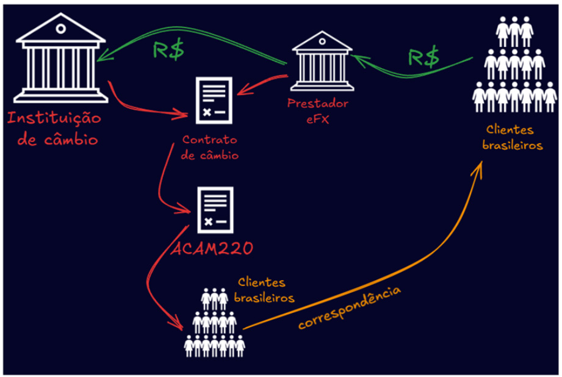
Assim, em uma dinâmica regular de facilitação de pagamentos, em um exemplo trivial, suponhamos que uma plataforma de investimentos estrangeira, durante uma mesma semana, receba R$ 20 milhões em depósitos e tenha R$ 15 milhões em resgates por parte de seus clientes. Teríamos a seguinte dinâmica financeira e cambial:
No exemplo acima, as duas ACAM220 deveriam constar com a nominata de todos os clientes emissários e recebedores, respectivamente, de dinheiro para/da plataforma, cada qual representando volumes respectivos de R$ 20 milhões em “saídas” e R$ 15 milhões em “entradas”.
Em que pese formalizados em nome da eFX, cada contrato de câmbio viabi lizaria a identificação de todos os clientes e os respetivos valores movimentados através da ACAM 220 – dando o mínimo de visibilidade aos envolvidos.
Teleologicamente, a norma do BACEN que trata das eFX busca evitar esse descontrole das atividades financeiras, que possibilitaria a livre troca de dinheiro entre países sem o adequado controle cambial. A norma busca evitar que se criem corredores financeiros de entrada e saída de dinheiro no país sem qualquer controle, visto que, a rigor, é intensamente difícil identificar a partir das contas dessas empresas prestadoras de eFX o que efetivamente é um dinheiro oriundo de prestação de serviços de pagamento/recebimento internacional, e o que é dinheiro que apenas transita informalmente pelas contas dessas empresas no país.
Todavia, esse tipo de serviço, pela completa falta de fiscalização dos contratos de câmbio, vem sendo utilizado como mecanismo extremamente eficiente para movimentação de dinheiro informal ao exterior e lavagem de dinheiro.
A fim de dar aplicabilidade prática ao tema fintechs, vamos traçar um pano rama geral das tipologias criminosas que vêm apresentando maior recorrência nas casuísticas investigativas. O objetivo não é exaurir o assunto, mas apenas traçar as tipologias que, sob o ponto de vista de número de casos ou gravidade, devem receber uma especial atenção.
No caso das instituições de pagamento, várias são as tipologias identificadas na realidade desse tipo de empresa. Como se trata de uma estrutura financeira voltada a facilitar rotinas dos seus clientes, de maneira quase institucional, essas empresas acabam apresentando uma grande inclinação a elastecer os critérios mais rígidos de conformidade e combate à lavagem de dinheiro no atendimento das demandas negociais.
Assim, quando formos tratar de IPs, devemos partir da concepção de que estamos tratando de uma instituição não amigável aos organismos de controle e que tende a ter patamares de compliance menos rígidos. Critérios de compar timentação e estratégias de provocação por informações devem, sempre, levar em conta que a IP pode não manter o sigilo que seria normal ao se tratar com instituições financeiras.
Infelizmente, muitas IPs apresentam como “diferencial” de seus serviços essa proximidade mais espúria entre clientes e gerentes, que pode enveredar para a frustração de medidas judiciais, inclusive.
Ademais, como se trata de um mercado em franco crescimento, a busca incessante por clientes acaba incentivando que algumas IPs “incrementem” seus serviços com políticas de blindagem patrimonial ou mesmo cadastral. É ponto comum que, hoje, grupos criminosos ou pessoas que buscam esconder seu patrimônio vêm optando por direcionar seus fluxos financeiros para IPs, visto que mantêm uma estrutura muito próxima à rede bancária, e, como buscam atrair grandes clientes, são menos exigentes sob o ponto de vista de conformidade.
A principal tipologia aplicável às IPs vem a ser o que se convencionou chamada de conta blindada.
Retomando os ensinamentos anteriores, é bom lembrar que há casos de IPs que, por critérios vigentes até MAI/26, não estão/estavam autorizadas a funcionar pelo BACEN. A dinâmica decorrente das recentes alterações da Resolução nº 80/2021, do BACEN ainda têm de ser monitoradas, a fim de avaliar a efetividade das alterações normativas.
Com isso, em 2026, teoricamente, todas as IPs terão obrigatoriedade de funcionar apenas com autorização do BACEN. O esperado e projetado, portanto, é de que as contas de pagamento deveriam passar a estar vinculadas no CCS e atreladas ao SISBJUD – entrando no radar das investigações.
Entretanto, a autorização do BACEN não redunda, automaticamente, no cadastro junto ao CCS e ao SISBJUD – que se faz por intermédio de um outro sistema do BACEN. Atualmente, estima-se que o período entre o recebimento da autorização do BACEN e a efetivação da vinculação das contas de pagamento no CCS/SISBAJUD pode atingir um ano.
Portanto, nesse cenário, é possível projetar um vácuo de informações até 2027, pelo menos. Por outro lado, com o recebimento de todos os pedidos de registro de IPs em um curto espaço de tempo, a tendência é de que esse tempo para vinculação ao CCS/SISBAJUD aumente ainda mais.
Ou seja, ainda temos um horizonte no qual, mesmo com a “formalização” de todas as IPs junto ao BACEN, temos a tendência de que, por período ainda considerável, teremos contas de pagamento que não serão atingidas por pedidos de quebra de sigilo bancário e ordens de bloqueio.
Diante desse panorama é que falamos em contas blindadas: são contas de pagamento que, pelas próprias regras do sistema, estão abaixo do radar de mapeamento pelos sistemas de persecução; ou seja: o próprio sistema normativo e burocrático “blinda”, ainda que momentaneamente, essas contas, sem que possamos imputar qualquer ilegalidade ou irregularidade de antemão ao não fornecimento dos dados de movimentação.
Noutra perspectiva, dado o endurecimento das regras para registro e manu tenção de IP (incluindo uma elevação de capital social mínimo), é intensa a potencialidade de que muitas IPs hoje atuantes não venham a solicitar cadastro no BACEN – até porque sempre almejaram atuar fora do radar.
Tal perspectiva indicaria o cometimento do delito descrito no art. 16, da Lei nº 7.492/86, que dispõe sobre a manutenção de instituição financeira ilegalmente.
Por fim, como dito anteriormente, em um mercado que se caracteriza pela inclinação a patamares menos rígidos de compliance, é sempre bom estar alerta ao desatendimento de padrões de comportamento legal por parte dessas entidades. Atrasos nos envios informações vinculadas a quebras de sigilo, não comunicação de atividades suspeitas ao COAF, repasse de informações sensíveis aos clientes são circunstâncias que podem representar a atuação associada da IP com clientes e criminosos, o que pode configurar prática do delito de gestão fraudulenta.
Diante disso, em uma investigação que albergue esse período desde 2021, temos de estar alertas à utilização desse tipo de conta por parte dos investigados. Nas circunstâncias, não podemos olvidar que muitos investigados têm a intenção de manter seus registros de fluxos financeiros ocultos, e que isso pode ter sido viabilizado por essas contas blindadas em IPs não autorizadas.
Dada amplitude do tema e as alternativas negociais que podem estar inseridas em um contrato de BaaS, seria inviável pensar em uma abordagem completa de todas a potencialidades criminosas que esse tipo de dinâmica permite. Considerando que tudo o que se pensa em termos de infraestrutura financeira e tecnológica de um banco ou IP pode ser disponibilizado a terceiros para ofereci mento de serviços financeiros, estamos a falar de um sem-número de potenciais vertentes criminosas com algum grau de risco de ocorrência.
Todavia, dentro desse grande cenário de possíveis tipologias, o uso das chamadas contas bolsão é, sem sombra de dúvidas, o espectro mais preocupante para o atual panorama de combate à lavagem de dinheiro e ao crime organizado.
Se, por um lado, as contas blindadas tendem a entrar em desuso pela própria evolução da legislação, noutra perspectiva as contas bolsão são uma realidade extremamente difícil de equalizar, dado que é um serviço extremamente útil e difundido.
Muito embora o BACEN sempre tenha alertado que a conta bolsão não existiria enquanto método legal de BaaS, a realidade confrontava diretamente essa perspectiva. As chamadas contas transacionais, usadas por UBER, IFOOD e, agora, pelas BET’s não deixam de ser um modelo de negócio que se aproxima intensamente da conta bolsão.
Mas o que é, de fato, a conta bolsão?
Para melhor entender a tipologia, é importante termos em perspectiva alguns termos usados pelo mercado:
Contas bolsão são contas abertas em nome do tomador de BaaS, a partir da estrutura financeira/de pagamentos do prestador de BaaS. Essa conta única, é disponibilizada a clientes do tomador de BaaS para serviços financeiros através da internet.
Invariavelmente, os clientes (pessoas físicas ou jurídicas) fazem um cadastro na plataforma disponibilizada pelo tomador que se aproxima de um layout de conta bancária/de pagamento. A partir de então, passam fazer operações financeiras diversas, a partir de um controle gráfico da plataforma.
Todavia, os movimentos financeiros coordenados pelos clientes representam movimentações na conta mantida pelo tomador de BaaS, e não em contas abertas individualmente em seus nomes. O que se estabelece é uma terceirização de movimentações financeiras, que se centralizam da conta do tomador do BaaS.
Graficamente, seria mais ou menos o seguinte panorama:
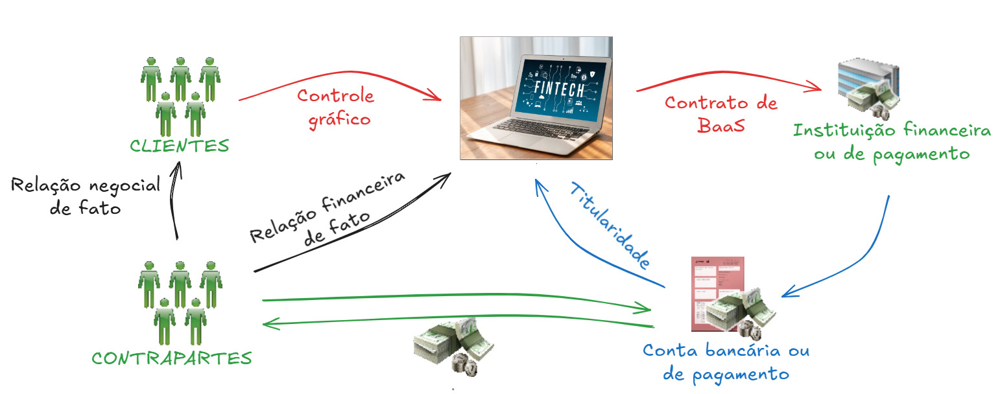
Explicando o modelo com um exemplo, se um cliente do tomador de BaaS fizer um PIX para uma contraparte qualquer, esse PIX será debitado da conta da fintech tomadora de BaaS. Assim, em uma eventual quebra de sigilo de dados desse cliente, essa transação não apareceria, dado que a relação financeira real se deu entre a fintech e a contraparte.
Note-se que os clientes do tomador BaaS (fintech) acabam não aparecendo na relação financeira que se estabelece a partir dos comandos da plataforma. Toda e qualquer movimentação do cliente é operada apenas graficamente no site, enquanto que a movimentação financeira efetiva se dá em um modelo paralelo, baseado em uma conta unificada que absorve todas as transações.
Note-se que a relação negocial não coincide com a relação financeira. A transação em conta vai ser registrada em uma relação contraparte-fintech, ocul tando o cliente da fintech. Assim, temos um dado oculto relevante da engrenagem financeira, que somente fica cadastrado graficamente na fintech.
Agora imagine que essa conta recepciona os valores referentes a milhares de clientes gráficos, tudo em um conta de propriedade da própria fintech.
A conta unificada em nome da fintech vem a ser a conta bolsão. Tem esse nome justamente porque os valores de milhares de clientes ingressam em uma única conta, misturando-se e formando um único fundo; o controle dessa grande bolsa de dinheiro fica a cargo da fintech, que controla saldos e processamentos individuais de cada cliente de maneira gráfica, por tecnologia.
Assim, quando um cliente X dá uma ordem de transferência de sua conta gráfica (no app ou site), a fintech graficamente procede o débito do valor, dimi nuído o saldo da conta gráfica. Mas a transação em si vai ser operada a partir da conta bolsão de propriedade da fintech. Portanto, o beneficiário da operação (contraparte) receberá uma transação a crédito do CNPJ da fintech, e não do CPF do cliente X.
Assim, uma quebra bancária em face de um investigado que usa esse tipo de conta bolsão não retornará esses registros operados a partir de contas gráficas, visto que, no mundo financeiro, as transações não foram feitas em seu nome. Somente um oficiamento à fintech viabilizaria a obtenção do extrato gráfico do cliente final, identificando as transações operacionalizadas pelo investigado.
A partir da Operação Carbono Oculto, a Resolução CMN N° 5.261 e a Resolução BCB N° 518, ambas de 3 de novembro de 2025, deliberadamente tornaram ilegal o uso de conta-bolsão para fins de movimentação de dinheiro para terceiros como forma de burla ao SFN e ao SPB. Os textos de ambos normativos são praticamente idênticos:
RESOLUÇÃO CMN N° 5.261, DE 3 DE NOVEMBRO DE 2025
(...)
Art. 1º A Resolução nº 4.753, de 26 de setembro de 2019,
publicada no Diário Oficial da União de 30 de setembro de
2019, passa a vigorar com as seguintes alterações:
“Art. 6º As instituições financeiras devem encerrar a conta de depósitos em relação à qual se verifique: I - irregularidades nas informações prestadas pelo titular, consideradas de natureza grave; ou II - prestação de serviços por parte do cliente titular que configurem serviços financeiros ou de pagamentos no âmbito do Sistema Financeiro Nacional ou do Sistema de Pagamentos Brasileiro, sem a devida previsão legal ou não aderentes à regulamentação vigente do Conselho Monetário Nacional ou do Banco Central do Brasil. § 1º Configura a hipótese do inciso II do caput, de forma não exaustiva, a utilização, pelo cliente titular, dos recursos mantidos em contas de depósitos para pagamentos, recebimentos ou compensações de obrigações em nome de terceiros, que possa permitir a ocultação ou a substituição de obrigações financeiras desses terceiros e inviabilizar sua identificação. § 2º A instituição deve utilizar critérios próprios para identificar o disposto no inciso II do caput, valendo-se inclusive de infor mações constantes em bases de dados públicas ou privadas. § 3º Os critérios de que trata o § 2º devem ser documentados e aprovados pela diretoria da instituição. § 4º As instituições devem manter à disposição do Banco Central do Brasil, por, no mínimo, dez anos, a documentação dos critérios referida no § 3º, bem como documentação rela cionada ao encerramento das contas de depósitos encerradas sob as hipóteses de que trata este artigo.” (NR) Art. 2º Esta Resolução entra em vigor em 1º de dezembro de 2025. RESOLUÇÃO BCB N° 518, DE 3 DE NOVEMBRO DE 2025
(...) Art. 1º A Resolução BCB nº 96, de 19 de maio de 2021, publicada no Diário Oficial da União de 21 de maio de 2021, passa a vigorar com as seguintes alterações: “Art. 13. As instituições devem encerrar a conta de pagamento em relação a qual verifiquem: I - irregularidades nas informações prestadas pelo titular, consideradas de natureza grave; ou II - prestação de serviços por parte do cliente titular que configurem serviços financeiros ou de pagamentos no âmbito do Sistema Financeiro Nacional ou do Sistema de Pagamentos Brasileiro, sem a devida previsão legal ou não aderentes à regulamentação vigente do Conselho Monetário Nacional ou do Banco Central do Brasil. § 1º São consideradas como irregularidades de natureza grave, entre outras, as situações de inscrição no Cadastro de Pessoas Físicas – CPF ou no Cadastro Nacional da Pessoa Jurídica – CNPJ definidas em instrução normativa da Receita Federal do Brasil como: ............................................................... § 2º Configura a hipótese do inciso II do caput, de forma não exaustiva, a utilização, pelo cliente titular, dos recursos mantidos em contas de pagamento para pagamentos, recebimentos ou compensação de obrigações em nome de terceiros, que possa permitir a ocultação ou a substituição de obrigações financeiras desses terceiros e inviabilizar sua identificação. § 3º A instituição deve utilizar critérios próprios para identificar o disposto no inciso II do caput, valendo-se inclusive de infor mações constantes em bases de dados públicas ou privadas. § 4º Os critérios de que trata o § 3º devem ser documentados e aprovados pela diretoria da instituição. § 5º As instituições devem manter à disposição do Banco Central do Brasil, por no mínimo dez anos, a documentação dos critérios referida no § 4º, bem como documentação relacionada ao encerramento das contas de pagamento encerradas sob as hipóteses de que trata este artigo.” (NR) Art. 2º Esta Resolução entra em vigor em 1º de dezembro de 2025. Note-se que, em ambos os casos, as normativas atribuem às IFs ou IPs a obrigatoriedade de fiscalização do uso indevido desse tipo de conta. A Resolução Conjunta nº 16/2025, por sua feita, aprimorou as proibições, detalhando ainda mais as formas de controle e responsabilidades no caso de se identificarem esse tipo de rotina. Entretanto, a perspectiva é de que esse tipo de serviço continue sendo oferecido clandestinamente. Algumas plataformas cobram valores mensais de até R$ 1 mil para manter contas desse tipo para clientes interessados em manter seus recursos abaixo do radar. E, infelizmente, acreditar que algumas IFs e IPs irão, de fato, fiscalizar o uso irregular de contratos de BaaS por fintechs acaba representando temerária utopia. Como dito, muitas IPs e IFs, pelo anseio de angariar uma maior fatia do mercado, têm como característica o oferecimento de facilidades aos seus clientes, notadamente no sentido de rastreamento dos fluxos financeiros. Diante disso, considerados os interesses na manutenção de alternativas que privilegiem clientes que desejem manter seus fluxos resguardados nessas contas-bolsão, as chances de que instituições deixem de encerrar esse tipo de conta são altíssimas, o que vai exigir uma atuação eficiente do BACEN em face dessas instituições.
O lado positivo da normatização e explicitação da clandestinidade desse tipo de operação via conta bolsão é a consolidação de um panorama mais objetivo de ilicitude, que sempre poderá representar a configuração de delitos por parte dos envolvidos de maneira mais clara.
Como visto, portanto, o grande problema do BaaS é a potencialidade de que esse tipo de serviço venha sendo utilizado para a criação de “subinstituições”, que se assemelham a um banco digital/IP, mas que não se submetem aos rigores da legislação.
Muitas dessas fintechs se autointitulam “bank”, sem qualquer vinculação formal ou cadastral ao BACEN – apenas por manterem um contrato de BaaS ativo. Tal prática foi proibida por outro normativo: a Resolução Conjunta nº 17/2025 BACEN/CMN.
Uma outra rotina também utilizada nesse contexto de BaaS são as chamadas contas Escrow. Também conhecida como conta vinculada, de garantia ou caução, esse tipo de serviço pode ser ofertado pelas instituições financeiras e de pagamento. Mas vem sendo bastante difundido a partir de empresas não financeiras, que se ocupam de um contrato de BaaS que viabiliza o oferecimento desse serviço.
A Lei nº 14.711/23 alterou o Código Civil e dispôs de algumas regras aplicáveis à conta Escrow.
Trata-se de um acordo entre três partes, no qual um terceiro (eleito e negocial mente neutro) é responsável por administrar a conta fazer com que a conta seja manipulada nos termos do que o contrato entre as partes envolvidas. Na prática, o gestor da conta mantém o dinheiro decorrente de um contrato até que ambas as partes da transação cumpram sua parte do acordo.
Exemplificativamente, imaginemos a compra e venda de um apartamento na planta: estabelece-se um agente neutro; o comprador deposita suas parcelas em uma conta Escrow; a construtora, por contrato, só vai receber os valores após cumprimento das etapas de obra estabelecidas; o agente neutro apenas “libera” os pagamentos conforme forem sendo comprovadas as etapas de construção. Note-se que, no caso, os agentes envolvidos gozam de maiores garantias no negócio: o comprador sabe que seu dinheiro só será entregue à construtora mediante determinada condição; o vendedor sabe que seu dinheiro está resguardado em uma conta garantida pelo contrato. Um exemplo muito popular de agente Escrow é a dinâmica da plataforma Mercado Livre, a partir da qual o comprador de uma mercadoria tem a garantia de que, o pagamento só será realizado se o produto adquirido chegar à sua residência em conformidade com o pedido. Normalmente, a própria instituição financeira ou de pagamento é eleita como “agente Escrow”. Escritórios de advocacia e tabeliães de notas também são comumente utilizados. Todavia, não existe uma especificidade que limite o uso de outros agentes como terceiro neutro. A grande vantagem, pela própria norma do SISBAJUD, é que os bloqueios judiciais não podem atingir esse tipo de conta (Portaria nº 3/2024, do CNJ, que trata do regulamento do SISBAJUD): Art. 17. As ordens judiciais de bloqueio de valor terão como limite o montante das importâncias especificadas, salvo quando incidentes sobre bens indivisíveis, e serão cumpridas com observância dos saldos disponíveis em contas de depósitos à vista (contas-correntes), conta salário, contas de pagamentos, de investimento, de registro e de poupança, depósitos a prazo, aplicações financeiras e demais ativos sob a administração e/ ou custódia da instituição participante. § 1º Os saldos existentes em Certificados de Depósito Bancário (CDB), Recibo de Depósitos Bancários (RDB), letras de crédito (LCA e LCI), operações compromissadas e de todas as outras aplicações financeiras de qualquer natureza deverão ser bloqueados pela instituição participante responsável pelo cumprimento da ordem judicial recebida via Sisbajud, independentemente da natureza do negócio jurídico firmado entre a instituição e o atingido, sem prejuízo de eventual alegação de impenhorabilidade junto ao juízo que proferiu a ordem de bloqueio. § 2º As ordens judiciais atingem o saldo credor nos prazos estabelecidos no Manual Básico do Sisbajud, sem considerar, nos depósitos à vista, quaisquer limites de crédito, a exemplo de cheque especial, crédito rotativo, conta garantida etc. Portanto, as ordens de bloqueio via SISBAJUD não atingem as chamadas contas garantidas, criando uma reserva legal de valores que não serão atingidos por ordens de bloqueio, em princípio. Ocorre que, diante disso, o uso das chamadas contas Escrow também vem sendo identificado como metodologia para ocultação de recursos – o que vem se mostrando igualmente preocupante no contexto de combate à lavagem de dinheiro e ao crime organizado.
Como estamos falando de um acordo particular, várias peculiaridades contratuais podem ser utilizadas como forma de dar aparência de licitude a uma operação criminosa via conta garantida. Na prática, podemos forjar um contrato qualquer, cujas transações financeiras se deem em uma conta garantida, e teremos um respaldo relativo de não bloqueio na conta. Como a gestão dessa conta fica nas mãos de um terceiro e tem por base um contrato particular, podemos falar na perpetuação do uso dessa conta, em moldes financeiros comuns, mas sob a roupagem de conta garantida.
Um exemplo muito atual de uso de conta Escrow vem a ser a partir da for matação dos chamados Fundos de Investimento em Direitos Creditórios. Nesse caso, a conta Escrow centraliza os valores que são pagos pelos sacados, cujos direitos creditórios foram adquiridos pelo FIDC:
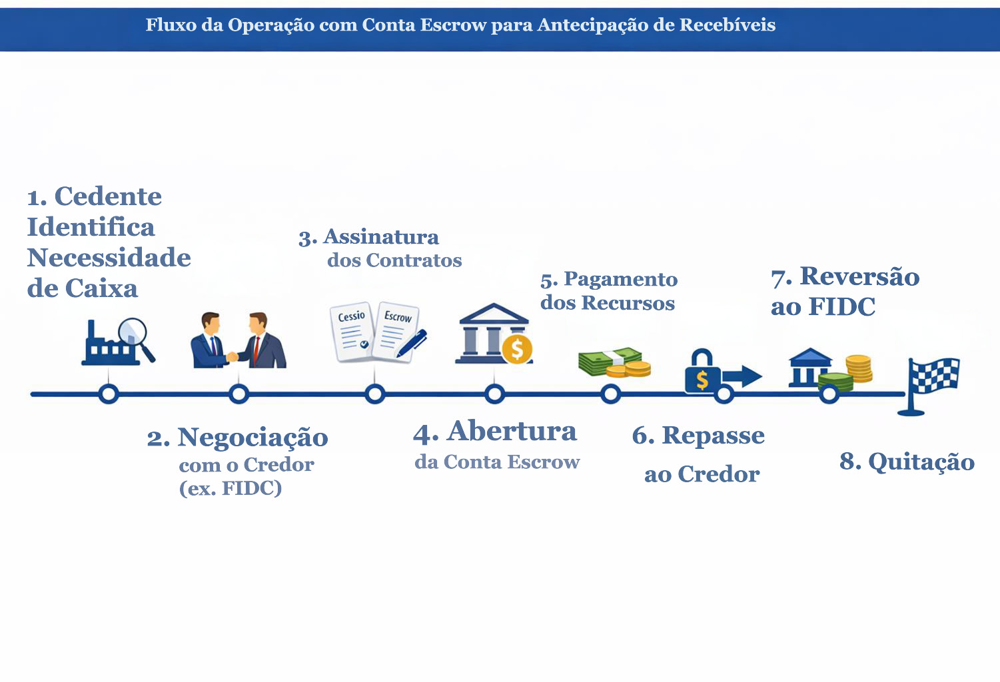
A fim de tornar ainda mais didático, vejamos o seguinte exemplo real de apresentação de diversos serviços financeiros via BaaS por empresas que não têm autorização pra funcionar pelo BACEN28:
https://grafeno.digital/sobre-nos/
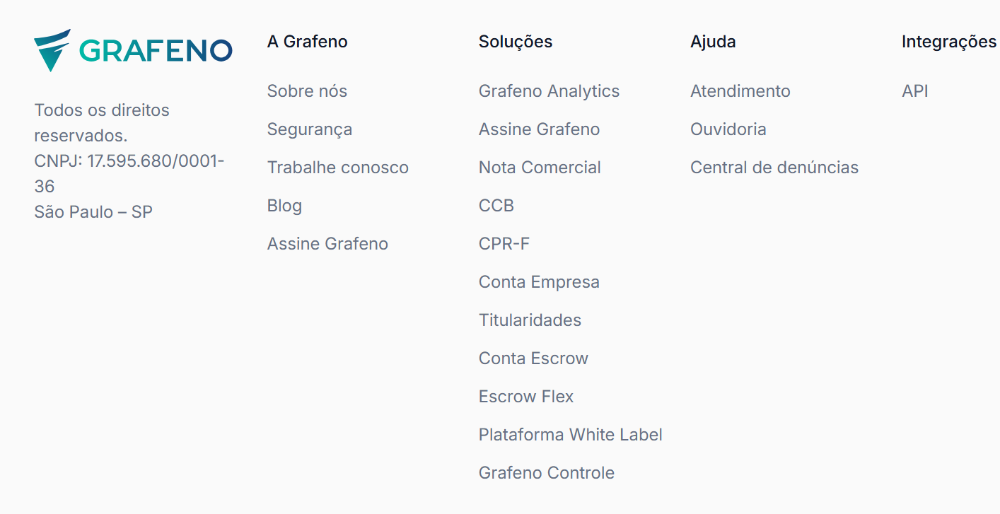
Em consulta no site oficial do BACEN, identifica-se que a empresa em referência não mantém qualquer autorização para funcionamento:
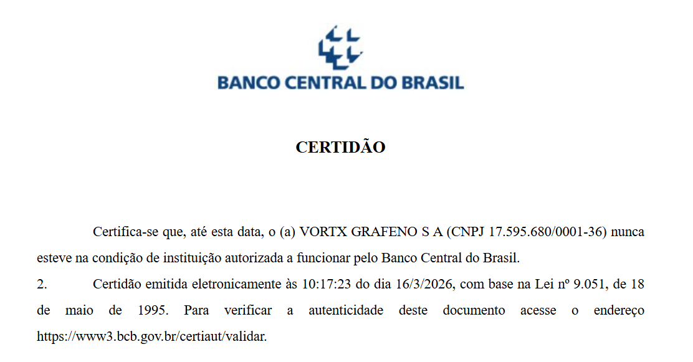
Observando o site da fintech, sequer fica claro qual a IF ou IP que funciona como prestador de BaaS para o site. Mas, para fins de experiência do cliente, o layout oferecido é idêntico ao de um banco ou IP: abertura de conta, controle de saldo, etc.
Como dito, em termos de BaaS, podemos falar de um sem-número de fraudes e condutas potencialmente delitivas. Infelizmente, a criatividade dos criminosos não encontra limitações de ordem lógica. Da mesma forma, muitas empresas têm predisposição a alargar o portfólio de serviços disponíveis a práticas criminosas, o que exige do investigador um olhar sempre crítico acerca da atuação desses atores privados.
Inicialmente, é forçoso relembrar que estamos falando de um serviço cuja essência é a movimentação massiva de dinheiro para atores estrangeiros e com um volume significativo de operações. Se pensarmos em um serviço de intermediação para uma plataforma de cripto estrangeira, por exemplo, é possível projetar a formalização de milhares de transações diariamente, representativos de milhões de reais transacionais.
Assim, temos um ambiente extremamente propício para que valores escusos sejam inseridos nesse contexto de milhares de transações, envolvendo milhões de reais, em poucos períodos. Fala-se, portanto, de um arcabouço de transações bancárias que, em si, têm capacidade de movimentar, pulverizar, fracionar e dis simular transações econômicas espúrias em magnitudes extremas – em verdadeira afronta ao sistema financeiro formal.
Atualmente, a dinâmica de envolvimento de recursos espúrios na movimenta ção financeira de uma eFX materializa uma parcela das operações que representa uma importante arma para lavagem de dinheiro por grandes organizações criminosas. O ingresso massivo de recursos por atores comuns do mercado viabiliza a ocultação de valores por criminosos em um grande hub de transações financeiras sobrepostas.
Em suma, a descoberta de engrenagens financeiras sombrias que aliam o uso de criptoativos e a maquiagem de operações clandestinas preliminares é fator que sobreleva a importância deste tipo de investigação, visto que lança foco sobre operações fomentadas a partir de movimentações massivas de dinheiro por grupos criminosos.
Atualmente, os maiores grupos criminosos mundiais vêm usando o sistema de criptoativos para movimentar suas engrenagens financeiras. Fala-se de um contexto absolutamente grave, no qual as autoridades do mundo inteiro se veem desafiadas pelas dificuldades impostas por essas operações que escapam ao sistema financeiro formal.
Retomando, é sabido que a eFX tem a obrigação, por normativa do BACEN, de transpor o fluxo financeiro de suas contas para contratos de câmbio respectivos. A ideia é que um contrato de câmbio eFX “espelhe” os movimentos de suas contas, identificando os clientes movimentaram dinheiro para determinadas plataformas, justamente porque são os movimentos cambiais que dão rastreabilidade às operações (quem mandou; quanto mandou; para qual plataforma mandou).
Todavia, o que se intensifica na realidade é que as eFX não atendem a essa normativa. De maneira preponderante, o que se observa é a não formalização correta de contratos de câmbio, que viabiliza a ocultação de pessoas dos contratos de câmbio.
O modelo de práticas mais comum é o sistema de settlement (compensação), que busca baratear os custos da operação e otimizar os movimentos financeiros.
Fala-se de um sistema clássico de dólar-cabo operado entre a plataforma estrangeira e a eFX, no Brasil. Centenas de operações de remessa e recebimento de dinheiro são compensadas umas entre as outras, sem que isso represente efetiva movimentação cambial no SFN. As transações negociais são dadas por satisfeitas sem que sejam representadas em movimentos cambiais.
Retomando o exemplo destacado no trecho teórico, vamos imaginar novamente aquela situação de uma plataforma de investimentos estrangeira que, durante uma mesma semana, receba R$ 20 milhões em depósitos e tenha R$ 15 milhões em resgates por parte de seus clientes. Como visto, teríamos de falar, nesse caso, de dois contratos de câmbio, cada qual no valor respectivo do fluxo financeiro, em um montante de R$ 35 milhões.
Todavia, o que a prática indica é que a eFX “opta” em fazer apenas um contrato de câmbio pelo saldo das operações no período, ou seja, no caso, um contrato de câmbio de R$ 5 milhões de da “saída” - o chamado settlement.
Assim, em vez de fluxos financeiros declarados em dois contratos de câmbio no montante de R$ 35 milhões, teremos apenas um fluxo cambial de R$ 5 milhões. Todos os demais movimentos financeiros se operaram via compensação remota
Com esse método de compensação, o que se intensifica, além do baratea mento dos custos de câmbio, as eFX conseguem esconder muitas informações necessárias para o mapeamento financeiro dos serviços eFX.
Note-se que, como a formalização de remessas se dá em um valor extrema mente inferior ao volume de entradas nas contas da eFX, basta que a relação de beneficiários do contrato de câmbio (relação da ACAM220) seja manipulada para fazer constar apenas pessoas e plataformas que não levantem suspeitas.
É justamente nesse cenário de manipulação das operações formalizadas que as eFX conseguem “esconder” clientes e plataformas, não expondo suas nominatas em nenhum documento. E isso decorre do fato de que, ao mandar as nominatas da ACAM220 para o banco de câmbio, essa listagem passa por uma triagem de compliance.
Nesse contexto que falamos em mescla de recursos, notadamente porque, diante dessas características do serviço, criminosos conseguem efetuar suas remessas financeiras ao exterior de maneira escamoteada (sem aparecer em um contrato de câmbio).
Note-se, portanto, que estamos falando de um sistema que alia o dólar-cabo e a fraude cambial. Isso porque, a plataforma estrangeira entre em sintonia de compensação com a eFX, no Brasil, dando por satisfeitas operações financeiras que não representaram a efetiva saída de dinheiro do SFN.
Somente uma pequena parcela de recursos é formalmente retirada do país, representante a anonimização de centenas de milhares de clientes beneficiados.
Agora imagine o cenário acima no contexto das casas de apostas ilegais – um grande problema atual no Brasil. O uso de plataformas estrangeiras para o cometimento de outros delitos pode ser testemunhado de maneira diária nas redes sociais e portais da imprensa.
Como se sabe, as casas de apostas não tinham autorização para funciona mento no Brasil. Todavia, essas plataformas ingressaram no mercado brasileiro de forma muito agressiva a partir de 2018 – quando houve a primeira sinalização legislativa autorizadora da exploração das apostas de quota fixa no Brasil.
A partir da liberalidade legislativa, o que se intensificou foi a utilização de sites sediados nos mais diversos locais do mundo – em países que tinham a ati vidade legalizada ou incentivada – que fomentavam a utilização do mercado de apostas por brasileiros, por intermédio da internet. Toda a movimentação dessas plataformas se dava via eFX.
Da mesma forma, muitas plataformas de investimentos sediadas no exterior, sem atuação regulada no Brasil, utilizam-se (ainda hoje) da internet para cooptar investidores no Brasil. Algumas plataformas de investimentos mais ambiciosos tam bém estão radicadas no exterior, notadamente por suas práticas mais agressivas e menos reguladas – especialmente quando o assunto é investimento em criptoativos.
Invariavelmente, essas plataformas são sediadas em paraísos fiscais ou em países com pouca ou nenhuma abertura para cooperação jurídica internacional quando o tema é combate à lavagem de dinheiro.
Basta que qualquer uma dessas plataformas se condicione a recepcionar e lavar dinheiro no Brasil, com a utilização de alguma eFX, e teremos por consolidado um cenário extremamente eficiente para o escamoteamento de dinheiro via serviço de facilitação de pagamentos.
A maior parte das empresas que prestam esse serviço não dispõem de autorização do BACEN e se consolidam em empresas digitais, que sequer têm escritórios formais. Basta que essas empresas disponibilizem suas contas bancárias, mantenham alguma tecnologia de conciliação de pagamentos (API) e passem a operar com uma plataforma estrangeira qualquer e teremos uma estrutura básica de lavagem de dinheiro muito eficiente.
Fala-se, em alguns casos, de centenas de milhares de transações diárias, em volumes pulverizados mas que, conjuntamente, alcançam cifras extremamente elevadas. Ademais, não existe regulamentação quanto a padrões de registros de clientes que utilizam determinado serviço de eFX, tampouco limitações de operação que tornem o sistema minimamente aferível.
Na prática, uma mesma conta pode a atender a clientes de dezenas de pla taformas, ao mesmo tempo, sem qualquer identificação clara quanto ao serviço ou compra que está por trás de uma transação.
O controle de clientes acaba ficando nas mãos da própria eFX, que pode manipular dados e informações para burlar o compliance de forma a “misturar” dinheiro de plataformas lícitas, com de plataformas clandestinas.
Importante mencionar que a própria compensação entre entradas e saídas (depósitos e resgates), chamada de settlement, é prática vedada pela legislação. A Resolução/BACEN nº 277 veda a compensação entre saldos, justamente porque essa prática envereda para a criação de cifras obscuras movimentadas pela eFX, que não serão apostas no contrato de câmbio.
Noutra perspectiva, alguns serviços de eFX operam de uma maneira ainda mais informal, funcionando como verdadeiros hubs para a transformação de recursos em criptoativos.
Em muitos casos identificados, o settlement cambial (que já seria ilícito) sequer é realizado. A compensação com a plataforma estrangeira é realizada através de remessa de ativos digitais. E isso não é sem razão de ser: o settlement através de criptoativos incorpora uma camada a mais de blindagem às operações.
Note-se, portanto, que o contexto de remessa fraudulenta de dinheiro ao exterior é ainda mais evidente se observarmos o envolvimento de corretoras de ativos virtuais.
As transações envolvem, portanto, a modalidade de cripto-cabo, que se consubstancia na substituição das remessas via câmbio oficial por transferências de ativos virtuais.
Conforme a normatização brasileira, TODAS as movimentações de dinheiro para e do exterior a serem formalizadas por facilitadoras de pagamentos devem ser feitas por intermédio de contrato de câmbio.
Por outro lado, segundo a jurisprudência brasileira, a remessa de valores ao exterior via cripto pode ser compreendida como evasão de divisas sempre que a rotina for envidada como ferramenta alternativa ao câmbio formal. Nesse sentido, no julgamento do Conflito de Competência nº 161.123SP - STJ (Relator: Ministro Sebastião Reis Júnior), restou definido que:
(...) Em relação ao crime de evasão, é possível, em tese, que
a negociação de criptomoeda seja utilizada como meio para
a prática desse ilícito, desde que o agente adquira a moeda
virtual como forma de efetivar operação de câmbio (conversão
de real em moeda estrangeira), não autorizada, com o fim de
promover a evasão de divisas do país. No caso, os elementos
dos autos, por ora, não indicam tal circunstância, sendo inviável
concluir pela prática desse crime apenas com base em uma
suposta inclusão de pessoa jurídica estrangeira no quadro
societário da empresa investigada. (...)
Dessa forma, quando compulsamos os dados bancários e cambiais de uma eFX e verificamos um grande volume de remessas para corretoras de criptoativos, estamos diante de indícios veementes de um sistema crito-cabo.
A opção pela remessa informal via cripto deriva tanto de uma necessidade de barateamento dos custos da facilitadora, quanto da maior informalidade das remessas – viabilizando um grau a mais de anonimato aos “clientes” de cada plataforma, visto que não serão mencionados em nenhum contrato de câmbio.
Os contratos de câmbio, em que pese necessários, acabam custando suntuosos valores em IOF, além de exigirem um controle maior quanto aos beneficiários finais dos contratos – visto que eles devem constar das ACAM220.
Teleologicamente, a norma do BACEN que trata das eFX busca evitar esse descontrole das atividades financeiras, que possibilitaria a livre troca de dinheiro entre países sem o adequado controle cambial. A norma busca evitar que se criem corredores financeiros de entrada e saída de dinheiro no país sem qualquer controle, visto que, a rigor, é intensamente difícil identificar a partir das contas dessas empresas o que efetivamente é um dinheiro oriundo de prestação de serviços de pagamento/recebimento internacional, e o que é dinheiro que apenas transita informalmente pelas contas dessas empresas no país.
Todavia, o que se intensifica, na prática, é que as empresas atuantes no ramo evitam proceder com a formalização de contratos de câmbio, optando pela remessa de dinheiro através do sistema modernamente conhecido como cripto-cabo.
A dinâmica exposta explicita o altíssimo interesse que fundos e plataformas estrangeiros mantêm no Brasil - mas sem se submeter às diretrizes legais do país. Infelizmente, muitas plataformas estrangeiras procuram serviços de eFX, no Brasil, para viabilizar a explorar de atividades financeiras clandestinas, justamente buscando a manipulação de dinheiro de brasileiros, mas com pouca ou nenhuma preocupação com a higidez dos negócios.
Ou seja, vemos um cenário no qual existe uma ferramenta muito eficiente para dar vazão às remessas de dinheiro ao exterior e no qual não existem atores interessados em guarnecer minimamente as operações de medidas de compliance que garantam a higidez dos negócios.
Ajustando-se a não realização dos contratos de câmbio com a parceria com plataformas estrangeiras, temos um cenário de extrema vulneração à capacidade do Sistema Financeiro Nacional dispor do mínimo de rastreabilidade das operações dessas plataformas no Brasil.
Diante disso, vê-se com clareza que essa dinâmica de mercado favorece atores que ofereçam fragilidades operacionais e financeiras às plataformas, bem como facilitadoras que disponham a manter determinadas diretrizes que essas instituições financeiras exijam. Em suma, fala-se de vicissitudes desse nicho de mercado que demonstram com absoluta clareza as fragilidades utilizadas pelos envolvimentos para o cometimento de delitos.
A crescente digitalização dos serviços financeiros no Brasil, impulsionada pela ascensão das fintechs, representa uma transformação profunda no Sistema Financeiro Nacional (SFN) e no cotidiano da sociedade. Essa revolução tecnoló gica, embora traga inegáveis benefícios em termos de agilidade, acessibilidade e inovação, também escancara vulnerabilidades que têm sido exploradas por organizações criminosas para a prática de delitos financeiros, especialmente a lavagem de dinheiro e a evasão de divisas.
A ausência de um conceito normativo claro sobre o que constitui uma fintech, somada à diversidade de serviços que essas empresas oferecem — como institui ções de pagamento, soluções de Banking as a Service (BaaS) e facilitadoras de pagamento internacional (eFX) — dificulta a fiscalização e a aplicação uniforme de medidas de controle e conformidade.
As instituições de pagamento, especialmente os chamados moedeiros eletrô nicos, têm sido utilizadas como instrumentos para a criação de contas blindadas, que operam fora do alcance dos sistemas de controle como o CCS e o SISBAJUD.
No âmbito do Banking as a Service, destaca-se a proliferação das contas bolsão, que concentram recursos de diversos clientes em contas únicas operadas por fintechs, dificultando a identificação dos reais titulares das transações. Essa estrutura tem sido instrumentalizada por grupos criminosos para escamotear fluxos financeiros e frustrar medidas judiciais.
Ainda que estejamos avançando na regulamentação, ainda não temos a percepção de como o mercado vai se comportar, de fato, com as alterações. Por outro lado, os mecanismos de fiscalização apresentam visíveis dificuldades operacionais, o que pode representar a perpetuação de práticas proibidas.
As facilitadoras de pagamento internacional (eFX), por sua vez, representam um dos maiores desafios contemporâneos no combate à lavagem de dinheiro.
Dentro do panorama exposto, as principais tipologias identificadas apresentam enquadramentos jurídicos relevantes:
Contas blindadas: além de constituírem um mecanismo típico de ocultação patrimonial, podem configurar o crime de manutenção de instituição financeira paralela (art. 16 da Lei nº 7.492/86), bem como lavagem de dinheiro (Lei nº 9.613/98), considerando a utilização dessas contas para dissimulação de valores ilícitos;
Contas-bolsão e contas escrow: caracterizam-se como tipologias clássicas de lavagem de dinheiro, pois permitem a movimentação indireta de recursos, ocultando a identidade dos beneficiários finais e frustrando medidas de bloqueio judicial. A utilização dessas contas para dar aparência de licitude a operações simuladas reforça o dolo na prática delitiva.
Tipologias relacionadas às eFX: todas envolvem potencial fraude cambial (art. 21 da Lei nº 7.492/86), evasão de divisas (art. 22 da mesma lei) e lavagem de dinheiro, especialmente quando há manipulação de contratos de câmbio, compensações indevidas (settlement) e remessas via criptoativos. Tais condutas afrontam diretamente as normas do Banco Central e configuram crimes contra o Sistema Financeiro Nacional.
Esse conjunto de práticas evidencia a necessidade de atuação integrada entre órgãos reguladores e autoridades de persecução penal, com vistas à atualização normativa e ao fortalecimento dos mecanismos de rastreabilidade. A sofisticação das tipologias exige respostas igualmente complexas, capazes de garantir a higidez do sistema financeiro e a efetividade no combate às organizações criminosas.